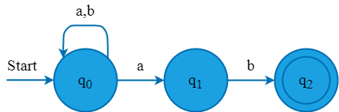
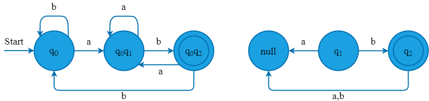
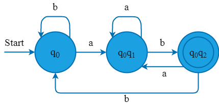

Teori Bahasa dan Otomata
Langkah 1: Awalnya Q'= ϕ
Langkah 2: Tambahkan q0 NFA ke Q'. Kemudian temukan transisi dari state awal ini
Langkah 3: Dalam Q', temukan kemungkinan set of state untuk setiap simbol input. Jika kumpulan state ini tidak ada di Q', maka tambahkan ke Q'
Langkah 4: Di DFA, final state adalah semua state bagian yang berisi F (final state NFA)
Konversi NFA berikut menjadi DFA.
Tabel transisi:
| State | a | b |
|---|---|---|
| -> q0 | {q0, q1} | q0 |
| q1 | - | q2 |
| *q2 | - | - |
Sekarang kita akan mendapatkan transisi δ' untuk status q0.
δ'([q0],
δ'([q0],
Transisi δ' untuk status q1 diperoleh sebagai:
δ'([q1],
δ'([q1],
Transisi δ' untuk status q2 diperoleh sebagai:
δ'([q2],
δ'([q2],
Sekarang kita akan mendapatkan transisi δ' pada [q0, q1].
| δ'(q0, q1], |
= δ(q0, |
| = {q0, q1} ∪ { - } | |
| = [q0, q1] | |
| δ'(q0, q1], |
= δ(q0, |
| = {q0} ∪ {q2} | |
| = [q0, q2] (new state generated) |
Sekarang kita akan mendapatkan transisi δ' pada [q0, q2].
| δ'(q0, q2], |
= δ(q0, |
|
| = {q0, q1} ∪ { - } | ||
| = [q0, q1] | ||
| δ'(q0, q2], |
= δ(q0, |
|
| = {q0} ∪ { - } | ||
| = [q0] | 000 00000 000000000 |
Keadaan [q0, q2] juga merupakan keadaan akhir karena berisi keadaan akhir q2. Tabel transisi untuk DFA yang dibangun adalah:
| State | a | b |
|---|---|---|
| -> [q0] | [q0, q1] | [q0] |
| [q1] | - | [q2] |
| *[q2] | - | - |
| *[q0, q1] | [q0, q1] | [q0, q2] |
| *[q0, q2] | [q0, q1] | [q0] |
Diagram Transisi akan menjadi:
Hasil Akhir
Dari diagram transisi state q0, q2 dan null tidak bisa mencapai dari state awal, sehingga dihasilkan DFA dengan:
Q = {q0, q0q1, q0q2}
∑ = {a,b}
S = q0
F = q0q2
Diagram Transisi:

PPT Finite State Automata. https://sikola.unhas.ac.id.
Handayaningsih, Sri. 2010. Konversi NFA ke DFA. Yogyakarta: Universitas Ahmad Dahlan. https://bit.ly/37yDJ5a.
Jaiswal, Sonoo. tth. Convertion from NFA to DFA. JavaTpoint: https://bit.ly/3lBYNNa.